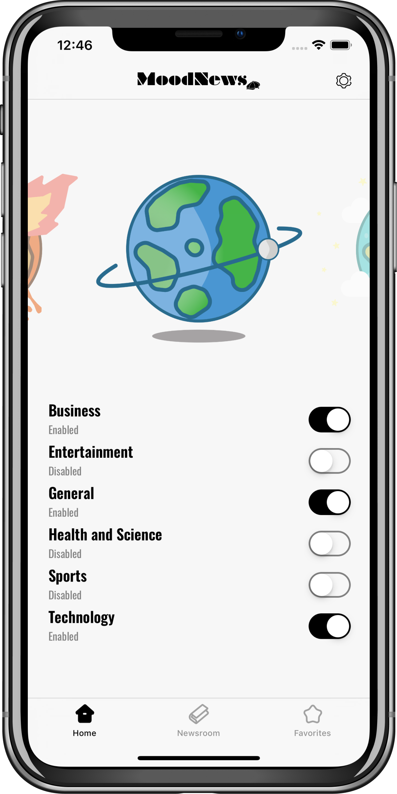

MoodNews
MoodNews
Get the news that match your mood!

MoodNews is the coolest way to make your daily news review. Harnessing the power of artificial intelligence, it filters top headlines from the most popular newspapers around the world just for you. In the mood for bad, neutral or good news? Just select the categories, tap the mood, then swipe the news. That’s MoodNews!
Select News Sources
- Choose your favorite news sources from six different catagories
- Get your news feed filtered by our algorithm according to the mood you picked
Swipe News
- Swipe through the latest news our algorithm filtered for you
- See our algorithm's mood predition accuracy percentage for each article
- Tap to see in-app the full article - if available - from the source's website
- Easily share the news you want with your friends
- Add articles to your favorites to be able to read and share them whenever you want
Free & Safe
- No online account or signup needed
- No paywalls, ads or clickbait
- All data is private and stored only on-device
- Fully free
By Souleymane Wague (GitHub, Twitter)